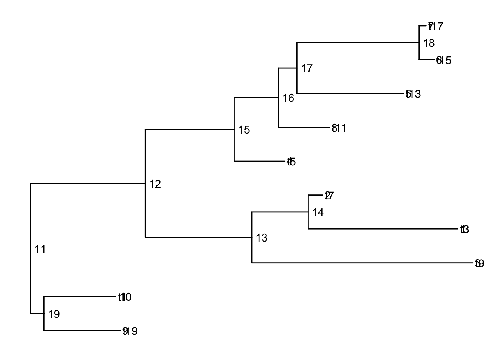
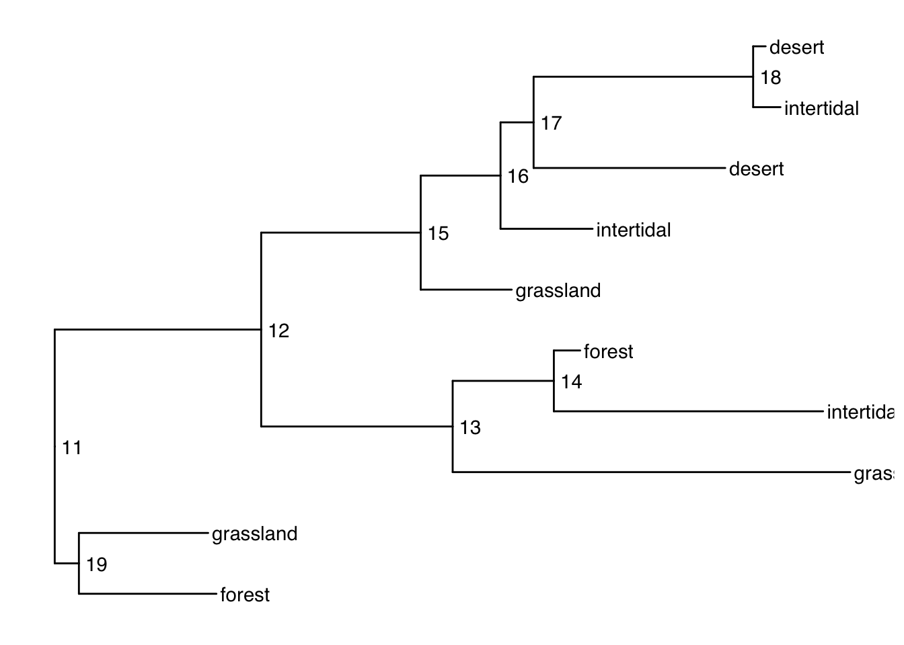
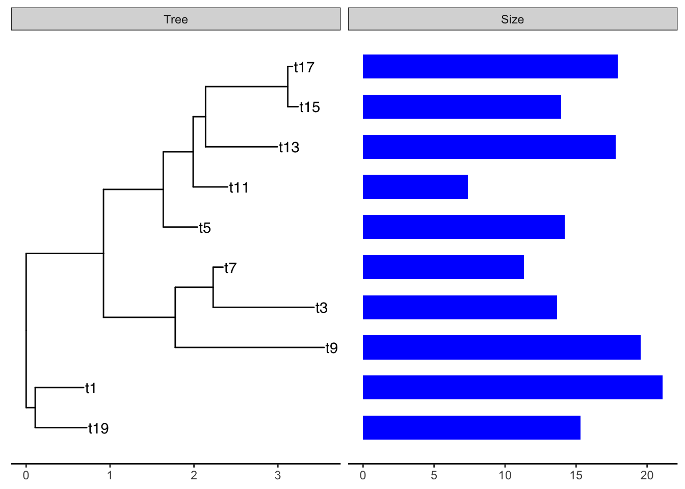
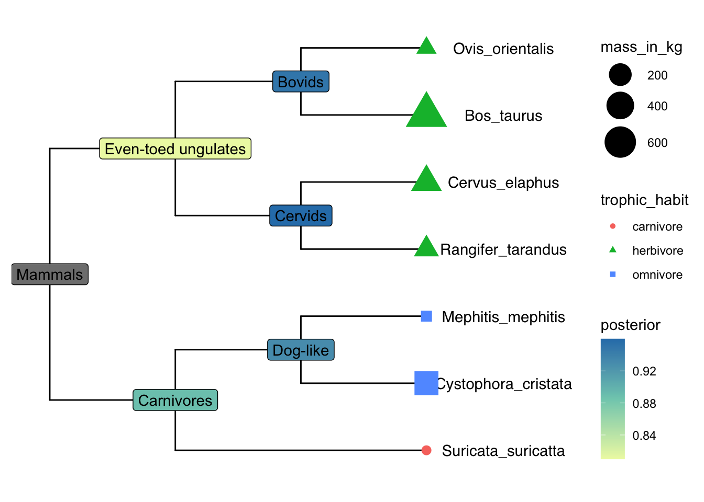
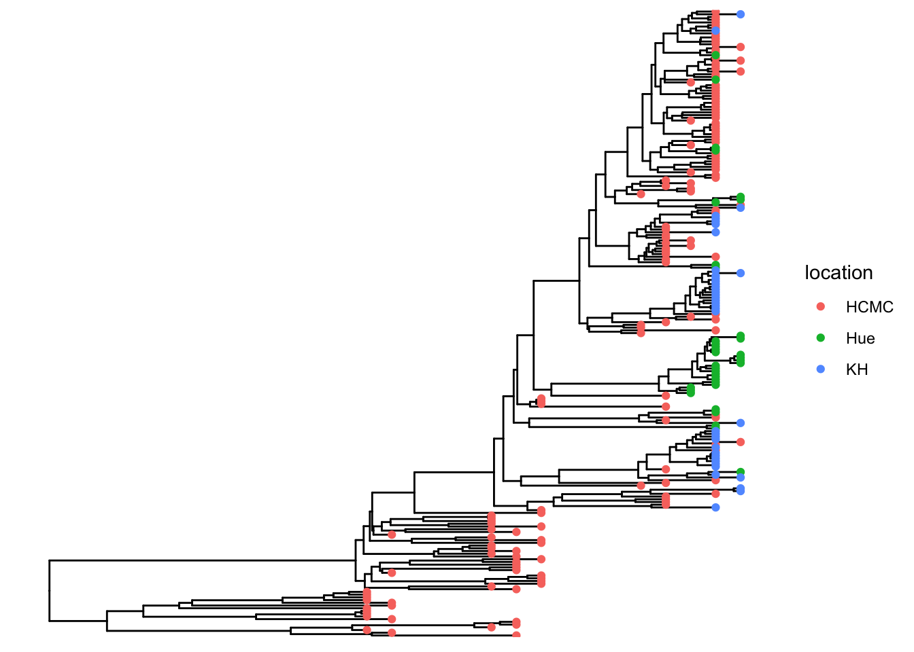
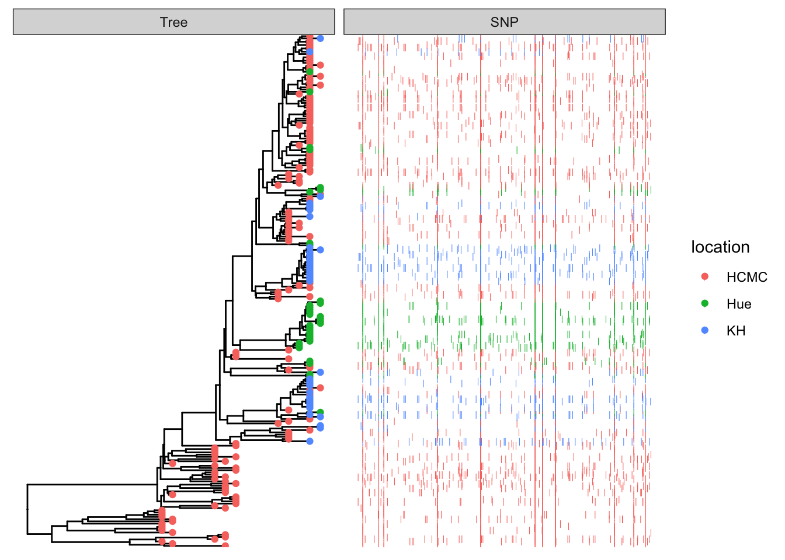
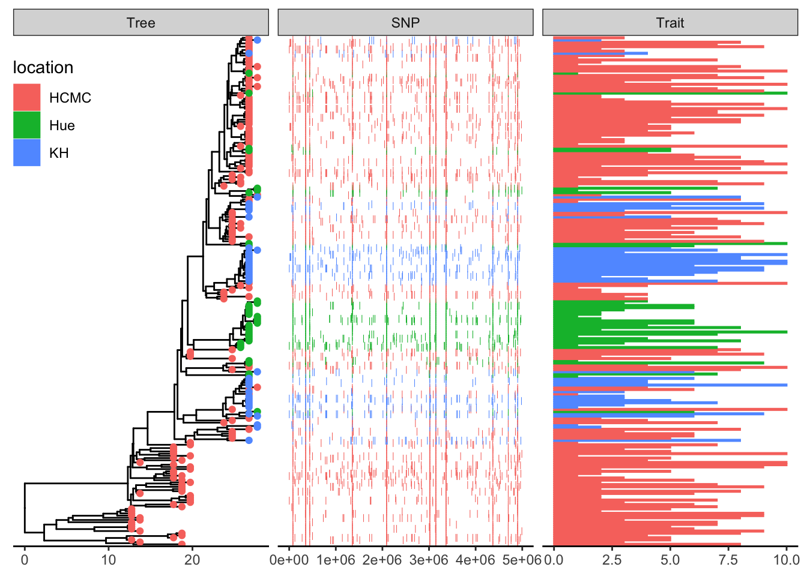

require(ape)
require(ggtree)
require(treeio)Acknowledgements
References for this Material:
- Treedata book by Guangchuang Yu (Yu 2022) https://yulab-smu.top/treedata-book/
- https://bioconnector.github.io/workshops/r-ggtree.html
Learning objectives
Learning Objectives
At the end of this lesson you will:
- Understand information content of phylogenetically structured data
- Understand particular R tree formats in ape, phylobase, and ouch
- Be able to hand-make trees
- Be able to import trees from nexus, newick, and other major formats in use today
- Be able to convert trees from one format to another
- Be able to perform basic tree manipulations
R packages you will need
apeggtreetidytreetreeio
Overview
ggtree is a powerful phylogenetic tree plotting package, that is used alongside treeio and tidytree packages to import/export and to manipulate phylogenetic trees, respectively. These packages allow you to subset or combine trees with data, annotate, and plot in so many different ways using the grammar of graphics.
Because itʻs written in the style of ggplot2 and the tidyverse, there are a lot of functions to remember, and now there are also multiple object types. The key to working effectively with ggtree is to be aware of what type of object you are working with, whether it is a dataframe, a tibble, a phylo tree, a treedata tibble, or ggtree object. It is easy to convert between these at will if you know what you are dealing with.
phylo -> treedata
Functions like read.tree amd read.nexus, etc. will read in objects of class phylo (they are actually referencing the ape function).
To show this, letʻs first generate a random tree using ape::rtree()
tree <- rtree(20)
class(tree)[1] "phylo"plot(tree) # ape plotting function
Note: ggtree can also accept phylo objects as arguments:
ggtree(tree) # ggtree plotting function
To save as newick and nexus formats, treeio has the following:
treeio::write.nexus(tree, file="tree.nex")
treeio::write.tree(tree, file="tree.tree")
list.files() [1] "_index.qmd" "anolis.SSD.raw.csv" "bigtree.nex"
[4] "ggtree_functions.R" "ggtree.R" "index_files"
[7] "index.qmd" "index.rmarkdown" "tree.nex"
[10] "tree.tree" Take a look at these files. They should be in nexus and newick formats, respectively.
tree_nex <- treeio::read.nexus(file="tree.nex")
tree_new <- treeio::read.newick(file="tree.tree")
class(tree_nex)[1] "phylo"class(tree_new)[1] "phylo"
Note
If you have trees from iqtree, BEAST etc., you should use the specialized read functions because they will capture the metadata embedded in the treeformat including support values.
Coverting between data types
The main functions for coersion are:
as.phylo (tree) # to phylo
Phylogenetic tree with 20 tips and 19 internal nodes.
Tip labels:
t20, t10, t3, t7, t6, t18, ...
Rooted; includes branch lengths.as.treedata(tree) # to treedata'treedata' S4 object'.
...@ phylo:
Phylogenetic tree with 20 tips and 19 internal nodes.
Tip labels:
t20, t10, t3, t7, t6, t18, ...
Rooted; includes branch lengths.treedata <- as.treedata(tree)
as_tibble(treedata) # to tibble# A tibble: 39 × 4
parent node branch.length label
<int> <int> <dbl> <chr>
1 22 1 0.915 t20
2 26 2 0.532 t10
3 26 3 0.847 t3
4 25 4 0.118 t7
5 28 5 0.690 t6
6 28 6 0.725 t18
7 29 7 0.261 t14
8 31 8 0.00314 t9
9 31 9 0.0128 t4
10 30 10 0.289 t12
# … with 29 more rows
# ℹ Use `print(n = ...)` to see more rowsSimulate phenotypic data
Add tiplabels
ggtree(tree) + geom_tiplab()
Get the tip labels
There is a function get_taxa_name() which is very handy, but NOTE: its argument is a ggtree object, not a treedata object.
p <- ggtree(tree) + geom_tiplab()
get_taxa_name(p) [1] "t4" "t9" "t12" "t14" "t18" "t6" "t3" "t10" "t7" "t17" "t15" "t13"
[13] "t11" "t5" "t2" "t16" "t20" "t1" "t8" "t19"taxa <- get_taxa_name(p)Simulate a data matrix:
n <- length(taxa)
size <- rnorm(n, mean=20, sd=5)
habitat <- sample(c("desert", "grassland", "forest", "intertidal"), size=n, replace=T)
dat <- data.frame( "label"= taxa, size, habitat)
dat label size habitat
1 t4 13.190731 desert
2 t9 19.541849 grassland
3 t12 24.957978 intertidal
4 t14 14.831695 forest
5 t18 21.221452 desert
6 t6 10.671196 intertidal
7 t3 15.308488 intertidal
8 t10 19.347808 desert
9 t7 21.088887 forest
10 t17 7.394603 desert
11 t15 14.215988 intertidal
12 t13 11.341547 desert
13 t11 17.769369 intertidal
14 t5 13.667986 grassland
15 t2 18.265933 grassland
16 t16 18.950921 desert
17 t20 21.236842 intertidal
18 t1 17.947431 grassland
19 t8 11.629983 intertidal
20 t19 13.964597 forestSee our ggtree as a treedata object:
as.treedata(p) %>% as_tibble %>% as.data.frame parent node branch.length label
1 22 1 0.914660785 t20
2 26 2 0.531915339 t10
3 26 3 0.847355583 t3
4 25 4 0.117541116 t7
5 28 5 0.689902873 t6
6 28 6 0.725284685 t18
7 29 7 0.260759907 t14
8 31 8 0.003144709 t9
9 31 9 0.012793490 t4
10 30 10 0.289318340 t12
11 33 11 0.102822345 t16
12 33 12 0.361748627 t2
13 34 13 0.406217780 t5
14 36 14 0.855577735 t13
15 37 15 0.122123984 t15
16 37 16 0.055801166 t17
17 35 17 0.411075242 t11
18 38 18 0.613953796 t19
19 39 19 0.453259011 t8
20 39 20 0.470733995 t1
21 21 21 NA <NA>
22 21 22 0.768506521 <NA>
23 22 23 0.153267556 <NA>
24 23 24 0.854931734 <NA>
25 24 25 0.451706708 <NA>
26 25 26 0.354669122 <NA>
27 24 27 0.472259514 <NA>
28 27 28 0.512345967 <NA>
29 27 29 0.681458147 <NA>
30 29 30 0.226860373 <NA>
31 30 31 0.391176049 <NA>
32 23 32 0.034940638 <NA>
33 32 33 0.130967953 <NA>
34 32 34 0.677282662 <NA>
35 34 35 0.356319352 <NA>
36 35 36 0.147734449 <NA>
37 36 37 0.980167842 <NA>
38 21 38 0.107984108 <NA>
39 38 39 0.106352382 <NA> # ggtree -> treedata -> tibble -> dataframeMerge tree with data
Now that we have a matching key in both the tree and data objects, we can join the tree with the dataframe by those matching labels using ggtreeʻs full_join:
ttree <- full_join(tree, dat, by = "label")
ttree'treedata' S4 object'.
...@ phylo:
Phylogenetic tree with 20 tips and 19 internal nodes.
Tip labels:
t20, t10, t3, t7, t6, t18, ...
Rooted; includes branch lengths.
with the following features available:
'size', 'habitat'.
# The associated data tibble abstraction: 39 × 5
# The 'node', 'label' and 'isTip' are from the phylo tree.
node label isTip size habitat
<int> <chr> <lgl> <dbl> <chr>
1 1 t20 TRUE 21.2 intertidal
2 2 t10 TRUE 19.3 desert
3 3 t3 TRUE 15.3 intertidal
4 4 t7 TRUE 21.1 forest
5 5 t6 TRUE 10.7 intertidal
6 6 t18 TRUE 21.2 desert
7 7 t14 TRUE 14.8 forest
8 8 t9 TRUE 19.5 grassland
9 9 t4 TRUE 13.2 desert
10 10 t12 TRUE 25.0 intertidal
# … with 29 more rows
# ℹ Use `print(n = ...)` to see more rowsttree %>% as_tibble %>% as.data.frame parent node branch.length label size habitat
1 22 1 0.914660785 t20 21.236842 intertidal
2 26 2 0.531915339 t10 19.347808 desert
3 26 3 0.847355583 t3 15.308488 intertidal
4 25 4 0.117541116 t7 21.088887 forest
5 28 5 0.689902873 t6 10.671196 intertidal
6 28 6 0.725284685 t18 21.221452 desert
7 29 7 0.260759907 t14 14.831695 forest
8 31 8 0.003144709 t9 19.541849 grassland
9 31 9 0.012793490 t4 13.190731 desert
10 30 10 0.289318340 t12 24.957978 intertidal
11 33 11 0.102822345 t16 18.950921 desert
12 33 12 0.361748627 t2 18.265933 grassland
13 34 13 0.406217780 t5 13.667986 grassland
14 36 14 0.855577735 t13 11.341547 desert
15 37 15 0.122123984 t15 14.215988 intertidal
16 37 16 0.055801166 t17 7.394603 desert
17 35 17 0.411075242 t11 17.769369 intertidal
18 38 18 0.613953796 t19 13.964597 forest
19 39 19 0.453259011 t8 11.629983 intertidal
20 39 20 0.470733995 t1 17.947431 grassland
21 21 21 NA <NA> NA <NA>
22 21 22 0.768506521 <NA> NA <NA>
23 22 23 0.153267556 <NA> NA <NA>
24 23 24 0.854931734 <NA> NA <NA>
25 24 25 0.451706708 <NA> NA <NA>
26 25 26 0.354669122 <NA> NA <NA>
27 24 27 0.472259514 <NA> NA <NA>
28 27 28 0.512345967 <NA> NA <NA>
29 27 29 0.681458147 <NA> NA <NA>
30 29 30 0.226860373 <NA> NA <NA>
31 30 31 0.391176049 <NA> NA <NA>
32 23 32 0.034940638 <NA> NA <NA>
33 32 33 0.130967953 <NA> NA <NA>
34 32 34 0.677282662 <NA> NA <NA>
35 34 35 0.356319352 <NA> NA <NA>
36 35 36 0.147734449 <NA> NA <NA>
37 36 37 0.980167842 <NA> NA <NA>
38 21 38 0.107984108 <NA> NA <NA>
39 38 39 0.106352382 <NA> NA <NA>And thatʻs what our treedata object looks like flattened out!
Subsetting the tree
Functions: drop.tip() and keep.tip()
Suppose we want to drop all of the even tips:
todrop <- paste("t", 1:10*2, sep="")
todrop [1] "t2" "t4" "t6" "t8" "t10" "t12" "t14" "t16" "t18" "t20"smalltree <- drop.tip(ttree, todrop)
smalltree'treedata' S4 object'.
...@ phylo:
Phylogenetic tree with 10 tips and 9 internal nodes.
Tip labels:
t3, t7, t9, t5, t13, t15, ...
Rooted; includes branch lengths.
with the following features available:
'size', 'habitat'.
# The associated data tibble abstraction: 19 × 5
# The 'node', 'label' and 'isTip' are from the phylo tree.
node label isTip size habitat
<int> <chr> <lgl> <dbl> <chr>
1 1 t3 TRUE 15.3 intertidal
2 2 t7 TRUE 21.1 forest
3 3 t9 TRUE 19.5 grassland
4 4 t5 TRUE 13.7 grassland
5 5 t13 TRUE 11.3 desert
6 6 t15 TRUE 14.2 intertidal
7 7 t17 TRUE 7.39 desert
8 8 t11 TRUE 17.8 intertidal
9 9 t19 TRUE 14.0 forest
10 10 t1 TRUE 17.9 grassland
# … with 9 more rows
# ℹ Use `print(n = ...)` to see more rowsggtree(smalltree) + geom_tiplab()
drop.tip keeps all of the metadata! keep.tip is imported from ape so it has to be converted to phylo and then the data joined again after.
Plotting with node labels
The geometries geom_text() and geom_node() are helpful for labelling all of the nodes. The function geom_tiplab() labels only the tips.
Add node labels so you know what the internal node numbers are:
ggtree(smalltree) +
geom_tiplab() +
geom_text(aes(label=node), hjust=-.3) # node numbers
Note: The tiplabels and the node labels crashed!
There are also 2 versions: geom_text2() and geom_node2() that allow subsetting the nodes, when you want the geometry to apply to only some of the nodes.
ggtree(smalltree) +
geom_tiplab() +
geom_text2(aes(label=node, subset=!isTip), hjust=-.3) # node numbers
isTip is a column of the ggtree object, so it is inherited when we provide the ggtree object.
Plotting with alternative tip labels
The dataframe portion of the treedata object can hold any number of columns of metadata. Perhaps you have some real names in a different column (like a display name), it is easy to swap out the tip labels. Here letʻs just use the habitat column
ggtree(smalltree) +
geom_tiplab(aes(label=habitat)) +
geom_text2(aes(label=node, subset=!isTip), hjust=-.3) # node numbers
When your tip labels get cut off
Add an x scale (usually time):
ggtree(smalltree) +
geom_tiplab(aes(label=habitat)) +
geom_text2(aes(label=node, subset=!isTip), hjust=-.3) + # node numbers
theme_tree2()
You can increase the size of the plot area to accommodate the longer labels:
ggtree(smalltree) +
geom_tiplab(aes(label=habitat)) +
geom_text2(aes(label=node, subset=!isTip), hjust=-.3) + # node numbers
theme_tree2() +
xlim(0,5)
Tree layouts
require(cowplot)
plot_grid(
ggtree(ttree),
ggtree(ttree, branch.length='none'),
ggtree(ttree, layout="dendrogram"),
ggtree(ttree, layout="roundrect"),
ggtree(ttree, layout="ellipse"),
ggtree(ttree, layout="ellipse", branch.length="none"),
ggtree(ttree, layout="circular"),
ggtree(ttree, branch.length='none', layout='circular'),
ggtree(ttree, layout="fan", open.angle=120),
ggtree(ttree, layout="inward_circular")
)Plotting data on the tree
geom_facet() and facet_plot() are general methods to link graphical layers to a tree.
These functions require an input dataframe with the first column containing the taxon labels (the key which matches to the tip labels of the phylogeny).
Internally these functions reorder the input data based on the tree structure so that you donʻt have to worry about the order of the rows.
Multiple layers can be added to the same dataset. Also different datasets can be added to the same figure.
A table of the geom layers that work with geom_facet is provided here.
Example: plot smalltree with size in a barplot
First make a tibble to attach to the tree. As of this writing, geom_facet will not accept a treedata object. It wants a dataframe or tibble of only the tips. But this is easy to make from the treedata. We just have to filter out the non-tip rows, then rearrange the columns to put the labels first:
require(ggplot2)
require(dplyr)
smdat <- smalltree %>%
as_tibble %>%
filter(!is.na(label)) %>%
relocate(label, .before=1) We can then add the barplot as a panel next to the tree plot using geom_facet:
ggtree(smalltree) +
geom_tiplab() +
theme_tree2() +
geom_facet(panel = "Size",
data=smdat,
geom = geom_col,
mapping=aes(x = smdat$size),
orientation = 'y',
width = .6,
fill="blue") 
The arguments for geom_facet() are:
panel: The name of the panel, displayed on topdata: atibbleordataframecontaining the metadata to plot. Must have as the first column the tip labels that are found in the phylogenetic tree.geom: a geom layer specifying the style of plotmapping: the aesthetic mapping. I should not have to supply thesmdat$here but it wonʻt work otherwise.- any additional parameters for the plot
A tree-panel and annotation example from the Tree Data Book:
This example plots a phylogeny alongside SNP (single nucleotide polymorphism) data and a barplot of some simulated data (Yu 2022).
The %+>% operator for ggtree objects
The %+>% operator is used to add data (dataframe, tibble) to a ggtree object:
my_ggtree <- my_ggtree %<+% new_dataThe result is a combined object that can be used for plotting, but it does not modify the original treedata object (which is a different object from the ggtree object). The full_join() function can be used to combine a tree with data to produce a new treedata object.
Example of the %+>% operator to add data to a ggtree object.
The package TDbook is the data accompanyment to (Yu 2022)ʻs Tree Data book. It is available on CRAN so you can install it with the usual install.packages("TDbook") function call.
require(ggtree)
require(ggplot2)
require(dplyr)
require(TDbook)
# load `tree_boots`, `df_tip_data`, and `df_inode_data` from 'TDbook'p <- ggtree(tree_boots) %<+% df_tip_data + xlim(-.1, 4)
p2 <- p + geom_tiplab(offset = .6, hjust = .5) +
geom_tippoint(aes(shape = trophic_habit, color = trophic_habit,
size = mass_in_kg)) +
theme(legend.position = "right") +
scale_size_continuous(range = c(3, 10))
p2 %<+% df_inode_data +
geom_label(aes(label = vernacularName.y, fill = posterior)) +
scale_fill_gradientn(colors = RColorBrewer::brewer.pal(3, "YlGnBu"))Warning: Removed 7 rows containing missing values (`geom_label()`).
Explore df_info
df_info A dataframe containing sampling info for the tips of the tree. 386 rows and 6 variables, with the first column being taxa labels (id).
df_alleles The allele table with original raw data to be processed to SNP data. It is a table of nucleotides with 386 rows x 385 variables. The first row contains tips labels. Column names are non-sense. The rownames (exept for the first one) contains the snp position along the genome.
## load `tree_nwk`, `df_info`, `df_alleles`, and `df_bar_data` from 'TDbook'
tree <- tree_nwk
snps <- df_alleles
snps_strainCols <- snps[1,]
snps<-snps[-1,] # drop strain names
colnames(snps) <- snps_strainCols
gapChar <- "?"
snp <- t(snps) # not rectangular!
lsnp <- apply(snp, 1, function(x) {
x != snp[1,] & x != gapChar & snp[1,] != gapChar
}) # different from row 1, not missing
lsnp <- as.data.frame(lsnp)
lsnp$pos <- as.numeric(rownames(lsnp)) # position from rownames
lsnp <- tidyr::gather(lsnp, name, value, -pos)
snp_data <- lsnp[lsnp$value, c("name", "pos")] # only TRUEssnp_data A dataframe containing SNP position data. 6482 x 2. The first column contains taxa labels coresponding to the tips of the tree (name). There are multiple rows per taxon, the second colum is the position pos of the snp in the genome. This is used as the x-variable in the plot.
In the dataframe snp_data the rows are ordered by position along the sequence (the x-dimension of this data), but the first column is the strain (taxon) name which matches the tips in the phylogenetic tree.
## visualize the tree
p <- ggtree(tree)
## attach the sampling information data set
## and add symbols colored by location
p <- p %<+% df_info + geom_tippoint(aes(color=location))
p
Add SNP and Trait plots aligned to the tree
Use geom_facet with reference to the respective dataframes/tibbles to add plots alignted to the tree. For the SNP plot, we will use geom_point which allows x-y plotting, with x-coordinate determined by pos and the y-coordinate aligned with the taxon. The symbol is the vertical line |.
## visualize SNP and Trait data using dot and bar charts,
## and align them based on tree structure
p1 <- p + geom_facet(panel = "SNP", data = snp_data, geom = geom_point,
mapping=aes(x = pos, color = location), shape = '|')
p1
df_bar_data is some simulated data with an id column specifying the taxon names, and a dummy_bar_value containing some data.
p1 + geom_facet(panel = "Trait", data = df_bar_data, geom = geom_col,
aes(x = dummy_bar_value, color = location,
fill = location), orientation = 'y', width = .6) +
theme_tree2(legend.position=c(.05, .85))
Example datasets
save to your working directory:
bigtree.nex
anolis.SSD.raw.csv
ggtree.R
This is an example of a typical workflow. We have carefully collected phenotypic data, and someone has published a massive phylogeny. We need to subset the tree to just the taxa we want to work on.
References
Yu, G. 2022. Data Integration, Manipulation and Visualization of Phylogenetic Trees. A Chapman & Hall Book. CRC Press. https://yulab-smu.top/treedata-book/.